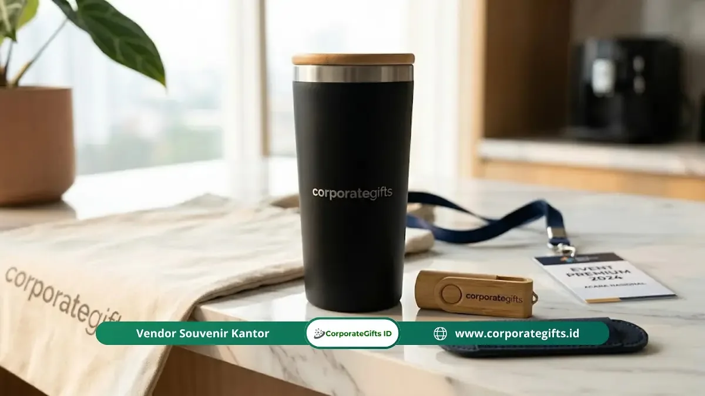

Corporate Gifts ID - Isi goodie bag seminar yang ideal adalah kombinasi item wajib fungsional seperti tas, blocknote, pulpen, dan name tag, ditambah item opsional yang relevan dengan profil peserta dan disesuaikan dengan anggaran acara secara realistis.
- Item wajib mencakup tas seminar, blocknote, pulpen, name tag, dan modul materi seminar.
- Item tambahan seperti tumbler custom dan flashdisk meningkatkan perceived value secara signifikan.
- Kualitas 3 hingga 5 item pilihan jauh lebih berkesan daripada 10 item murah tanpa relevansi fungsi.
- Sesuaikan kurasi isi dengan segmen profil peserta: eksekutif, profesional, mahasiswa, atau peserta umum.
- Konsistensi visual branding pada seluruh item memperkuat identitas dan prestise acara korporat.
Apa Saja Isi Goodie Bag Seminar yang Wajib Ada?
Isi goodie bag seminar yang wajib ada adalah tas seminar, blocknote, pulpen, name tag, dan materi acara. Kelima komponen ini merupakan fondasi dasar yang langsung digunakan peserta sejak momen registrasi hingga penutupan sesi.
1. Tas Seminar
Tas adalah elemen paling visibel dan berumur paling panjang dari seluruh isi goodie bag seminar. Fungsinya ganda: sebagai wadah semua perlengkapan selama acara dan media branding berjalan yang dibawa pulang peserta untuk digunakan kembali. Pilihan material yang umum tersedia:
- Non-woven atau Spunbond: Pilihan paling ekonomis, ringan, tersedia dalam berbagai warna cerah, cocok untuk acara massal dengan anggaran terbatas.
- Kanvas atau Blacu Premium: Memberikan kesan berkelas, sangat kuat, memiliki daya tarik estetika tinggi, cocok untuk konferensi korporat.
- Polyester / Cordura: Material tahan air dan fleksibel, sangat pas untuk seminar teknikal atau pelatihan luar ruang.
2. Blocknote atau Buku Catatan
Blocknote adalah item dengan frekuensi penggunaan tertinggi selama sesi seminar berlangsung. Ukuran A5 adalah standar yang paling praktis untuk mencatat poin materi. Sertakan logo acara atau penyelenggara pada cover depan untuk memperpanjang kehadiran branding setelah seminar usai.
3. Pulpen atau Bolpoin
Pulpen berlogo adalah item goodie bag seminar dengan nilai guna harian yang konsisten tinggi. Peserta hampir pasti menggunakan pulpen ini selama acara dan membawanya pulang ke kantor. Pilihlah pulpen dengan grip yang nyaman dan tinta berkualitas yang tidak mudah bocor.
4. Name Tag dengan Lanyard
Name tag adalah komponen fungsional yang memfasilitasi identifikasi peserta, alur registrasi, dan networking antarpeserta. Gunakan tali lanyard berlogo yang nyaman dikalungkan seharian. Name tag berbahan PVC lebih awet dan memberikan kesan lebih profesional dibandingkan kertas tipis biasa.
5. Materi Seminar
Materi dapat dikemas dalam beberapa format tergantung tema dan anggaran acara:
- Booklet atau modul tercetak yang berisi ringkasan materi dan profil pembicara
- Jadwal acara terstruktur atau rundown sesi workshop
- Kartu peserta atau sertifikat kehadiran fisik
- Brosur sponsor yang relevan dengan topik acara
Apa Saja Item Tambahan yang Paling Efektif Meningkatkan Nilai Goodie Bag Seminar?
Item tambahan yang paling efektif meningkatkan nilai goodie bag seminar adalah tumbler, flashdisk, dan lanyard custom, karena memiliki frekuensi penggunaan tinggi pascaacara sekaligus menjadi media promosi jangka panjang yang konsisten.
Tumbler atau Botol Minum Berlogo
Tumbler custom logo secara konsisten masuk dalam daftar item goodie bag seminar yang paling diingat dan paling sering digunakan kembali oleh peserta. Tumbler stainless steel insulasi ganda atau botol BPA-free akan terus dipakai berbulan-bulan setelah acara, memberikan eksposur brand organik yang berkelanjutan.
Flashdisk Berisi Materi Digital
Untuk seminar teknikal, pelatihan profesional, atau konferensi akademik, flashdisk kartu atau kayu berisi materi presentasi, e-book referensi, dan software pendukung adalah item yang sangat diapresiasi peserta. Kapasitas 8 GB hingga 32 GB sudah sangat memadai.
Lanyard Custom
Lanyard dengan motif full-print logo acara dan warna identitas korporat memberikan kesan profesional dan seragam selama acara berlangsung. Banyak peserta menggunakan kembali tali lanyard berkualitas untuk kartu akses kantor mereka.
Dompet Kartu atau Card Holder
Card holder berbahan kulit sintetis minimalis dengan emboss logo adalah item goodie bag yang memiliki perceived value tinggi di kalangan peserta profesional meskipun biaya produksinya relatif ramah anggaran.

Bagaimana Menyesuaikan Isi Goodie Bag Seminar dengan Profil Peserta?
Isi goodie bag seminar harus disesuaikan dengan segmen peserta karena kebutuhan audiens eksekutif senior berbeda signifikan dengan peserta mahasiswa atau staf umum:
1. Untuk Peserta Profesional atau Eksekutif Senior (VIP)
Fokus pada kualitas bukan kuantitas. Pilih 4 hingga 5 item premium dalam kemasan yang rapi: notebook cover kulit, pulpen metal berbobot, tumbler stainless steel, dan card holder eksklusif. Hindari memasukkan item filler yang mengurangi kesan mewah.
2. Untuk Peserta Korporat Umum
Prioritaskan fungsionalitas kerja. Paket standar dengan tote bag kanvas yang kokoh, blocknote A5, pulpen berkualitas, dan 1 item tambahan fungsional seperti tumbler atau flashdisk sudah sangat memadai dan bernilai guna tinggi.
3. Untuk Peserta Muda atau Mahasiswa
Pilihlah item yang relevan dengan gaya hidup aktif dan kreatif: tote bag spunbond trendi, stiker laptop, pulpen warna, atau voucher digital. Desain yang modern dan dinamis lebih disukai dibandingkan format kaku formal.
4. Untuk Seminar Hybrid atau Online
Perhatikan efisiensi bobot dan volume dimensi kemasan karena biaya logistik ekspedisi per unit menjadi pertimbangan utama. Fokus pada item padat fungsi, ringan, dan tahan banting selama proses pengiriman antarkota.
Berapa Item yang Ideal dalam Satu Goodie Bag Seminar?
Jumlah ideal isi goodie bag seminar adalah 5 hingga 8 item yang dipilih berdasarkan relevansi dan kualitas fungsi. Goodie bag yang terlalu penuh dengan barang murah justru memberikan kesan berantakan dan menurunkan persepsi mutu acara.
Berikut panduan sederhana alokasi paket berdasarkan estimasi budget:
- Budget di bawah Rp 50.000 per paket: Fokus pada 5 item wajib fungsional (tas spunbond, blocknote ekonomis, pulpen, name tag, dan sertifikat).
- Budget Rp 50.000 hingga Rp 150.000 per paket: 5 item wajib berkualitas standar korporat ditambah 1 hingga 2 item tambahan pilihan (tumbler plastik BPA-free atau flashdisk).
- Budget di atas Rp 150.000 per paket (Executive Kit): 5 item wajib kualitas premium (tas kanvas/laptop pouch, leather notebook, pulpen metal) ditambah 2 hingga 3 item eksklusif (tumbler stainless insulasi, flashdisk metal/kayu, card holder).
Kesalahan Umum dalam Menyusun Isi Goodie Bag Seminar
Beberapa kekeliruan yang sering terjadi saat merancang paket goodie bag seminar antara lain:
- Memilih Berdasarkan Harga Termurah Semata: Mengabaikan daya tahan barang sehingga pulpen macet atau tas robek saat baru dipakai.
- Terlalu Banyak Brosur Iklan: Memasukkan materi promosi sponsor yang tidak relevan sehingga tas terasa seperti tumpukan sampah kertas.
- Mengabaikan Keselarasan Desain (Brand Identity): Warna tas, notes, dan pulpen tidak serasi sehingga terlihat seperti kumpulan barang sisa gudang.
- Beban Terlalu Berat: Memberikan barang yang terlalu merepotkan peserta untuk dibawa pulang, terutama bagi peserta luar kota.
- Waktu Pemesanan Terlalu Mepet: Memesan H-3 acara sehingga vendor tidak sempat melakukan proofing sampel fisik dan quality control.
Pertanyaan Umum Seputar Isi Goodie Bag Seminar (FAQ)
Kesimpulan
Menyusun isi goodie bag seminar yang efektif adalah tentang relevansi dan kualitas, bukan semata kuantitas barang. Cinderamata yang benar-benar digunakan peserta pascaacara adalah investasi terbaik yang memberi nilai kepuasan bagi peserta sekaligus dampak branding jangka panjang bagi institusi Anda.
Disclaimer: Panduan penyusunan isi goodie bag seminar ini disusun berdasarkan praktik terbaik manajemen event B2B. Pemilihan varian bahan tas, opsi souvenir pelengkap, dan kustomisasi logo dapat disesuaikan dengan standar identitas visual perusahaan Anda.